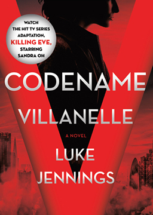
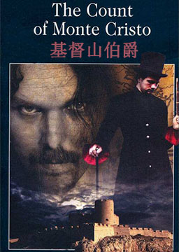
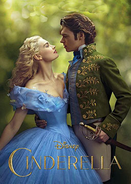
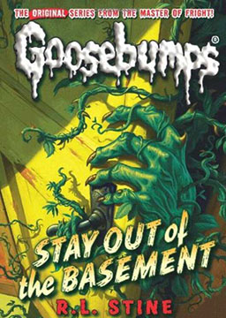
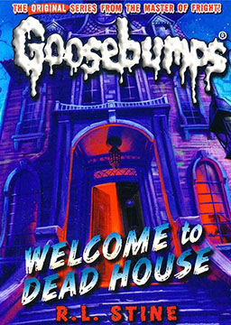

双语小说
收录中英文双语小说300多部，包括世界经典名著、社会小说、悬疑小说等短篇和长篇小说，可按照初中难度、高中难度和大学难度分类阅读，每部小说都有分段中英文对照，点击单词可查看中文翻译。

杀死伊芙1: 代号薇拉内拉 (Killing Eve 1: Codename Villanell)
作者：卢克·詹宁斯 (Luke Jennings) [美国]
伊芙是英国军情五处办公室人员。一心想当间谍的伊芙面对百无聊赖的办公室生活相当受折磨。优雅有才又嗜血的女杀手薇拉内尔的出现，让伊芙看到了人生方向。毫无实战经验的伊芙开始追踪薇拉内尔，两人开始进行一场猫鼠游戏 。奥米茄文件 (The Omega File)
作者：巴西特 (Bassett) [英国]
世界上会发生一些奇怪的事。你能听到各种耸人听闻的故事，但它们是真人真事吗？你能相信谁呢？一些故事永远不会刊登在报纸上，因为政府不想让人们知道它们。但这样的故事会出现在奥米茄文件里。 有多少人知道奥米茄文件呢？不多——在布鲁塞尔恐怕只有30个人知道它。霍克和祖德就知道，因为文件里的许多故事都是他们收集来的。他们过着有趣的生活。一天，他们来到伦敦和一个青年交谈，他告诉他们一个关于某药品公司的离奇故事，但这是不是真的呢？又有一天，他们去苏格兰找一个生活在尼斯湖中的怪兽。当然，世上没有怪兽——对吗？还有一次，他们在太平洋的一个小岛上，那里的人都在谈论一只宇宙飞船。可是这只宇宙飞船在哪里呢？谁又真正见过它呢？它们都在那儿——在奥米茄文件里。
尤利西斯 (Ulysses)
作者：詹姆斯·乔伊斯 (James Joyce) [爱尔兰]
作为意识流小说的代表作，被誉为20世纪百大英文小说之首，并被奉为20世纪最伟大的小说。内容简介：青年诗人斯蒂芬寻找一个精神上象征性的父亲和布卢姆寻找一个儿子的故事。斯蒂芬已经有了一个生理上的父亲西蒙·迪达勒斯，但是斯蒂芬只把他当成肉体上的父亲，他认为自己有能力变得成熟，也可以成为一名父亲，然而，由于父亲西蒙·迪达勒斯的批评和缺乏理解并没有成功。因此斯蒂芬所寻找的父亲只能是一个象征性的父亲，这个父亲可以允许斯蒂芬自己也成为一名父亲。布卢姆寻找儿子从很大程度上讲则是因为他需要一个后代来巩固自己的身份和延续香火。由此可见，斯蒂芬和布卢姆两人都希望通过寻求为父之道来巩固他们各自的身份。乔伊斯通过描述一天内发生的单一事件向人们展示了一幅人类社会的缩影，通过对一个人一天日常生活和精神变化的细致刻画揭示了人类社会的悲与喜，英雄与懦夫的共存以及宏伟与沉闷的同现。
基督山伯爵 (The Count of Monte Cristo)
作者：大仲马 (Alexandre Dumas) [法国]
公认通俗小说中的典范。这部小说出版后，很快就赢得了广大读者的青睐，被翻译成几十种文字出版，在法国和美国多次被拍成电影。它仍在世界各国流传不衰，被公认为世界通俗小说中的扛鼎之作。内容简介：19世纪法国皇帝拿破仑“百日王朝”时期，法老号大副爱德蒙·唐泰斯受船长委托，为拿破仑党人送了一封信，遭到两个卑鄙小人和法官的陷害，被打入黑牢。期间狱友法利亚神甫向他传授各种知识，并在临终前把埋于基督山岛上的一批宝藏的秘密告诉了他。被陷害入狱十四年后，唐泰斯越狱后找到了宝藏，成为巨富，从此化名基督山伯爵（水手辛巴德、布索尼神父、威尔莫勋爵），经过精心策划，报答了恩人，惩罚了仇人。该小说以基督山扬善惩恶、报恩复仇为故事发展的中心线索，主要情节跌宕起伏，迂回曲折，从中又演化出若干次要情节，小插曲紧凑精彩，却不喧宾夺主，情节离奇却不违反生活真实。全书出色地运用了“悬念”、“突发”、“发现”、“戏剧”等手法，在叙述上有较大的叙述密度和复杂的人物关系。这一切使这部小说充满了叙述的张力，洋溢着叙述本身所产生的美。因此，《基督山伯爵》被公认为通俗小说的典范。
灰姑娘 (Cinderella)
作者：迪士尼 (Disney) [美国]
母亲的早逝令灰姑娘辛德瑞拉再也感受不到母爱的温暖，失去了公主般的童年。后母和她的两个女儿，无时无刻不在想方设法折磨辛德瑞拉，给她糟糕的住处、做不完的家务。幸好得道多助、失道寡助，心地善良的辛德瑞拉结识了一大班朋友，老鼠、鸟儿、小狗都是守护在她周围的老友记。王子要在全城寻找王妃，辛德瑞拉用破旧零碎的布料赶做了一件礼服，当然这远远比不上心花怒放的姐姐们穿得艳丽。然而，灰姑娘得到了魔法相助，在神奇的法术中她美得倾城，坐着南瓜车来到王子的宫殿，与王子翩翩起舞。她知道，法术会在12点之前统统消失，大钟敲响的那一刻，她慌忙逃离王子，情陷已深的王子拿着灰姑娘不小心遗下的玻璃鞋，誓要从百万女子中找到一生中的最爱辛德瑞拉。
黑暗物质1: 黄金罗盘 (His Dark Materials 1: The Golden Compass)
作者：菲利普·普尔曼 (Philip Pullman) [英国]
这一个不凡世界，人的灵魂是一个以动物形式存在的精灵，且人与精灵密不可分，不然，生命将不复存在。13岁的莱拉，长在这世界的约旦大学，没有家庭之爱，不知富有、强大但已成敌的父母，更不知自己身负震撼世界的诅咒；她终日与玩伴及他们的精灵自由自在地嬉闹，长成了一个诡计多端、恣意妄为且谎话连篇的野女孩。然而，可怕的预言无法抗拒，莱拉注定要承担起救世主之责，扮演人类之母夏娃的角色：人人畏惧的“尘埃”出现了，饕餮游荡在城市各个角，玩伴接连莫名失踪，快乐时光彻底完结于密友罗杰的失去，巨大的阴谋正在酝酿之中。于是，在个惟她可懂、能预知未来的黄金罗盘——真理仪的帮助下，浑然不觉险恶的莱拉决定去寻找被邪恶科学家掠走的孩子们，从此开了拯救世界的艰难之旅；她朝着未知的北极而去；等待她的，有披甲熊、女巫、天使、厉鬼，更有能够终结生命的精灵切割机…而领引她步步踏入死亡之地的，竟是其父，自然科学家阿斯里尔勋爵，与其母，狂热的原教旨主义信徒库尔特夫人。华盛顿广场 (Washington Square)
作者：亨利·詹姆斯 (Henry James) [美国]
在19世纪的纽约，成功的标志就是在华盛顿广场拥有一幢自己的房屋，奥斯汀·斯洛珀医生就是一个成功的人。他生活时尚，为人风趣，又聪明机智，很招人喜爱。这些特点在他女儿凯瑟琳身上却一个也看不到。她是一个善良单纯的姑娘，热爱并崇拜自己的父亲，一心一意想讨他的欢心，却令他非常失望。斯洛珀医生从不指望凯瑟琳身上会发生什么有趣或令人激动的事情。但是华盛顿广场的生活最终却变得很不平静。这里发生了一段罗曼史，一个相貌英俊的年轻人来到这里追求凯瑟琳。凯瑟琳的姑姑，头脑简单的彭尼曼夫人着实为此感到高兴；她觉得莫里斯·汤森非常迷人，凯瑟琳当然也是这么认为的。可是，斯洛珀医生对年轻的汤森先生却有着截然不同的看法。医生很有钱，也知道自己死后凯瑟琳会继承一笔每年3万美元的遗产。他想知道这样一个英俊潇洒的年轻人为什么会追求他那毫无趣致的女儿？
鸡皮疙瘩 02: 远离地下室 (Goosebumps 02: Stay Out of the Basement)
作者：R.L.斯坦 (Robert Lawrence Stine) [美国]
布鲁尔博士自从被公司解雇以后就整天待在地下室里做有关植物的试验，很少与家人团聚。玛格丽特和凯西很为爸爸担心，同时也对爸爸的试验非常好奇。姐弟俩爸爸外出时偷偷溜进地下室，凯西不小心被植物的叶子紧紧“抓”住。后来爸爸每次有事外出时就把地下室的门锁起来。姐弟俩发现爸爸变得越来越怪了，他的手指弄破了，流出来的血居然是绿色的；他的帽子掉了，露出来的头发居然成了绿色的叶子……究竟发生了什么事？姐弟俩俩爸爸不在家时撬开了地下室的门，结果他们发现……更让他们目瞪口呆和心惊胆战的是，爸爸明明是去机场接妈妈了，可为什么地下室里还有一个爸爸？
鸡皮疙瘩 01: 死亡之屋 (Goosebumps 01: Welcome to Dead House)
作者：R.L.斯坦 (Robert Lawrence Stine) [美国]
阿曼达和乔西不喜欢他们的新家，他们觉得那座老房子十分古怪，一到晚上，楼梯上就会出现男孩的身影，黑暗中不时传来窃窃私语声，窗帘莫名其妙地摆动起来……而整个黑瀑布镇也同样透着阴森森的怪异气息。但是爸爸妈妈不相信他们的话。“你们会适应的，”他们说，“出去交几个新朋友吧。”阿曼达和乔西就出去了，没想到这些诡异的新朋友根本不是爸爸妈妈所想的那样，他们给姐弟俩带来了更大的恐惧和迷惑……
分享年 (The Year of Sharing)
作者：亨利·吉尔伯特 (Herry Gilbert) [英国]
五百年后的世界会是什么样子呢？城市会越变越大吗？楼房、汽车、工厂会不会越来越多？噪音、烟雾、尘土会不会越来越多？那些任由动物自生自灭的绿色森林还会存在吗？理查德的未来世界跟这些情况很不一样：那里只有自行车，没有汽车；只有村庄，没有城市。而世界上的森林只属于野生动物，那里一直是它们生活的家园。理查德厌倦了乡村的平静生活，他已经12岁了。他想要一辆汽车，开着它风驰电掣。但是，世界上所有人都必须在12岁的时候履行“分享年”。到明天早晨，理查德就要去森林深处了。他会有一个新家庭，成员都是野生动物的家庭。他将和它们在一起生活一年，将会经受寒冷、饥饿和疲惫，但是他会学到很多，学会如何与其他动物分享这个世界。